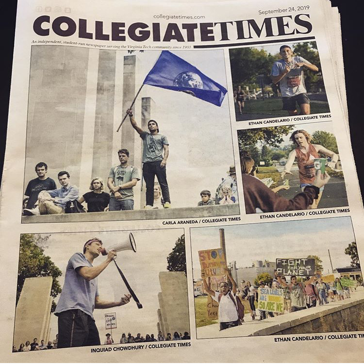
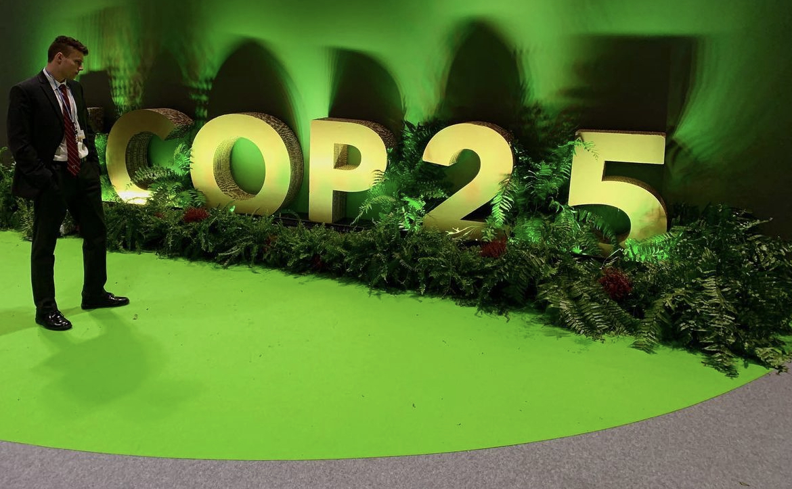
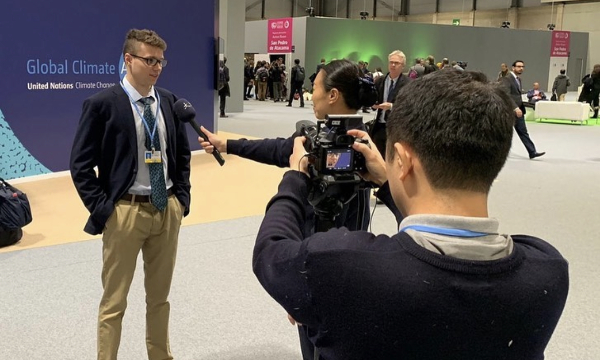

Political and Environmental Activism
Climate change is one the most important issues to be discussed at the moment because it influences all aspects of our lives, and I think that everyone can make a difference in this matter. I would like to make a difference by advocating for policies that support sustainability and environmental justice.

My Journey
I was only twelve years old when I started my journey as an activist. The first time I heard about global warming, I became fascinated with its science, which made me write extensively about it in school.
One of my first initiatives was to build a floating windmill, which I submitted to a competition at the local university. These experiences propelled me to continue my advocacy in college.

Virginia Tech Climate Action Committee
When I was a student at Virginia PolyTech University, I was part of the Climate Action Committee, where I had the opportunity to work together with the university administration, faculty, and students to develop and implement strategies to decrease the greenhouse gas emissions of the university. This experience has helped me develop skills in policy formulation and team problem-solving, while also teaching me the importance of academic institutions in addressing the issue of climate change.

Representing at COP25
Being a student delegate at COP25 was a turning point in my activism. Attending the United Nations Climate Change Conference opened my eyes to the global reality of the climate crisis and the various approaches that nations are taking. Networking with representatives, experts, and other activists from other countries was both inspiring and enlightening. This reinforced my belief in the power of global cooperation and the urgent need for a united response to the climate crisis.

Environmental Psychology and Hardt Hyperloop
Continuing my education, I received a master’s degree in Environmental Psychology, where I utilized my skills and knowledge to further comprehend the human side of environmental issues. As a UX Researcher at Hardt Hyperloop, I researched views on sustainable transportation. This role helped me build my skills in research and comprehension of human perception.
The Scientist Rebellion
The Scientist Rebellion is a group of scientists who are fighting for drastic changes that can solve the climate crisis. By taking part in peaceful protests and rallies, we hoped that we could force the government and corporations to take drastic measures to address climate change. This experience has taught me to value civil disobedience as a tool for social change and the importance of scientists in the climate struggle.
Expanding Activism
My activism has also led me beyond the issue of climate change and into the Free Palestine movement. The link between environmental justice and human rights has encouraged me to extend my activism. The Palestine movement has widened my understanding of global justice by showing me that true sustainability is not possible without social equality and human dignity. This broader perspective has reminded me that the struggle for a just and sustainable world is complex and interconnected.
Reflecting on My Journey
My involvement in all these different aspects of climate activism has had a huge impact on who I am today. Every single event has given me important lessons about activism and the climate crisis. Establishing the VTCJ Foundation taught me the power of community, while attending COP25 has given me a global perspective, and Scientist Rebellion has shown me the power of taking direct action.
Going forward, I am more committed than ever to continue working with organizations that are fighting climate change. I hope to use my experiences to motivate and inspire others.